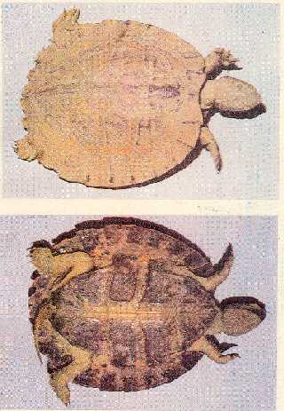

|
Digitized
Inventory of Animal Resources: Reptilia |
Cyclemys dentata
Taxonomic Details
----- Scientific Name
----- Classification
----- Synonyms
-----
Common Names
Other Biological Details
----- Habit and Habitat
----- Distribution
---------- Extent of Occurrence
---------- Area of occurrence
---------- Altitude
---------- Population
-----
Conservation Status
----- Diagnostic Features
----- Breeding system
Miscellaneous Information
Literature
Classification:
Genus : Cyclemys Bell 1834
Cyclemys dentata ( Gray 1831 )
Synonyms:
Common Names:
Garo and Khasi Hill Tortoise
Other Biological Details Threat
No reliable data
Most active and Omnivorous. Juveniles are generally aquatic and prefer to live with the hill streams. Adults are entirely terrestrial
Most active and Omnivorous. Juveniles are generally aquatic and prefer to live with the hill streams. Adults are entirely terrestrial
Extent of
Occurrence Northeastern
State, along the hill slopes bordering the stream
Area of
occurrence: Arunachal
Pradesh, Assam, Mehalaya
Altitude:
Population:
Conservation status: Insufficiently known
Size
:
Moderately large, reaching up to 24 cm in length
Body :
Head moderately large, snout shorter than the orbit, slightly projecting
beyond the lower jaw. Skin of the
posterior portion of the head is divided into large shields.
Limbs
:
Limbs are with fully webbed digits and have transeversly enlarged scales.
Tail
:
Tail moderate, thin, pointed, longer in the young than the adult.
Carapace :
Depressed and considerably flat, almost as broad as long in the
juveniles, slightly more convex and elongate in the fully grown individuals. Neural plate of the carapace is hexagonal with a narrow
posterior margin. Posterior part of the carapace is strongly serrated in the
young but comparatively less in the adult.
Plastron narrower than the opening of the shell, truncate, openly
emarginated anteriorly, notched posteriorly, not completely closing the shell,
united to the carapace by a ligamentous tissue.
Colouration : Colour most variable, general dorsal colouration is dark brown, olive brown or black, in many individuals dark rays are available on carapace, juveniles are generally with chestnet tinge all over the dorsum. Head brownish generally with black spots. Neck light yellow with dark longitudinal streaks.
Breeding system: Nesting : Lays two to four eggs in a clutch.
